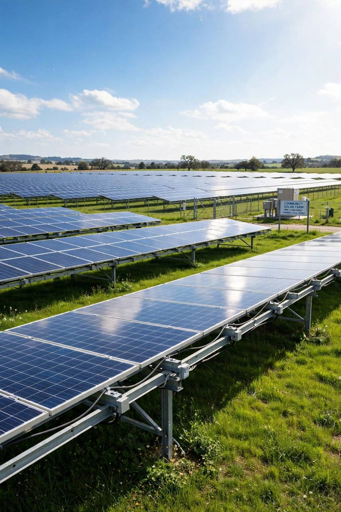

Projeto ·
Terceiro campo solar entra em operação
Com mais 35 painéis, o projeto chega a 45 famílias atendidas.
Ler mais
O terceiro campo foi ligado depois de dois fins de semana de mutirão. Com ele, a micro-rede da Luz Solidária chega a 2,1 km e a geração média passa de 135 kWh por dia. Todas as famílias do raio de 0,7 km do novo campo já estão com energia.